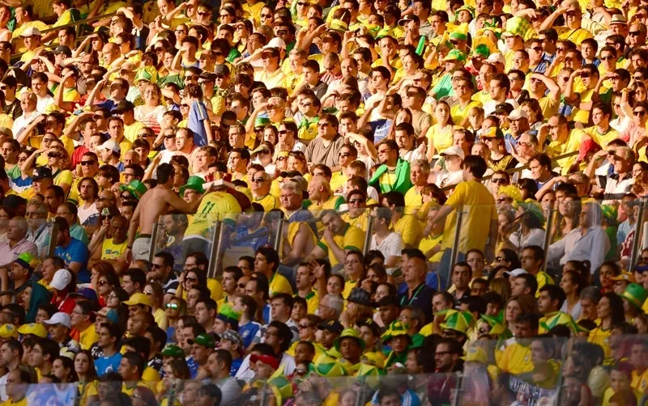

PASIÓN
En Brasil, el fútbol forma parte de la vida cotidiana y se relaciona con la identidad, las emociones y las celebraciones de sus comunidades.
Más allá de los estadios profesionales, esta pasión también se vive en los barrios, en las familias y en los espacios donde las personas se reúnen para compartir.
